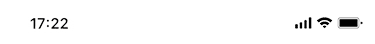

在发现线索/收到材料后第2日起算10个工作日时若未搜索到核查信息，则提醒核查人员进行处理



预警说明

存在超期或即将超期情形时将产生预警
超期

即将超期

立案预警
发现线索或者收到材料之日起十五个工作日内需核查并提交立案/不予立案审批，提前3天预警
核查预警
在发现线索/收到材料后第2日起算10个工作日时若未搜索到核查信息，提前3天预警
审核预警
审核机构应当自接到审核材料之日起十个工作日内完成审核，提前3天预警
处理决定预警
适用普通程序办理的案件应当自立案之日起九十日内作出处理决定，经批准可延长三十日，提前3天预警
收缴预警
当事人应当自收到行政处罚决定书之日起十五日内缴纳罚没款，提前3天预警
结案审批预警
适用普通程序的案件，办案机构应当在下列情形下十五个工作日内填写结案审批表，提前3天预警
- 行政处罚决定执行完毕后
- 案件终止调查
- 确有违法行为，但有依法不予行政处罚情形
- 违法事实不能成立，不予行政处罚
- 不属于市场监督管理部门管辖，需移送其他行政管理部门
- 违法行为涉嫌犯罪的，需移送司法机关
归档预警
适用简易程序办理的案件，办案人员应当在作出行政处罚决定之日起七个工作日内交至所在的市场监督管理部门归档保存。
关键环节 提前预警
20230912增加告知预警
立案预警
发现线索或者收到材料之日起十五个工作日内需核查并提交立案/不予立案审批，提前3天预警
审核预警
审核机构应当自接到审核材料之日起十个工作日内完成审核，提前3天预警
告知预警
当事人自告知书送达之日起五个工作日内，未行使陈述、申辩权，未要求听证的，视为放弃此权利，市场监管部门可下达处理决定书，超过5个工作日后预警
处理决定预警
适用普通程序办理的案件应当自立案之日起九十日内作出处理决定，经批准可延长三十日，提前3天预警
收缴预警
当事人应当自收到行政处罚决定书之日起十五日内缴纳罚没款，提前3天预警
结案审批预警
适用普通程序的案件，办案机构应当在下列情形下十五个工作日内填写结案审批表，提前3天预警
- 行政处罚决定执行完毕后
- 案件终止调查
- 确有违法行为，但有依法不予行政处罚情形
- 违法事实不能成立，不予行政处罚
- 不属于市场监督管理部门管辖，需移送其他行政管理部门
- 违法行为涉嫌犯罪的，需移送司法机关
归档预警
适用简易程序办理的案件，办案人员应当在作出行政处罚决定之日起七个工作日内交至所在的市场监督管理部门归档保存。
1、增加预警的说明
核查预警：
在发现线索/收到材料后第2日起算10个工作日时若未搜索到核查信息，提前3天预警